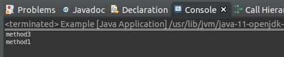
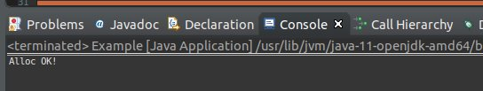

こんにちは。明月です。
このページではこのページにはReflection機能の中でアノテーション(Annotation)に関して調べてみました。
前述でアノテーションに関して説明した時があります。
link - [Java スタディ - 26] アノテーション(annotation)
その時にアノテーションではただ、クラスやメソッドや変数などのメタデータだと言いましたが、実はアノテーションはReflectionで入るとデータ初期設定、メソッドを探しの里程表だと思います。
import java.lang.annotation.ElementType;
import java.lang.annotation.Retention;
import java.lang.annotation.RetentionPolicy;
import java.lang.annotation.Target;
@Target(ElementType.METHOD)
@Retention(RetentionPolicy.RUNTIME)
public @interface TestAnnotaion { }
public class Node {
@TestAnnotaion()
public void method1() {
System.out.println("method1");
}
public void method2() {
System.out.println("method2");
}
@TestAnnotaion()
public void method3() {
System.out.println("method3");
}
}
public class Example {
public static void main(String... args) throws Exception {
try {
// クラスを割当てします。
Node node = new Node();
// Nodeクラス中でメソッドを全て取得する。
Method[] methods = Node.class.getMethods();
for(Method method : methods) {
// メソッドでアノテーション「TestAnnotation」を取得する。
TestAnnotaion anno = method.getAnnotation(TestAnnotaion.class);
if(anno != null) {
// アノテーションがあることだけ実行
method.invoke(node);
}
}
} catch (Throwable e) {
throw new RuntimeException(e);
}
}
}

上の例をみれば、クラスのメソッドを全て取得してアノテーションがあるかどうかであるなら「invoke」で実行します。
なので結果は「method1」、「method3」は出力するし、「method2」の場合は出力しないですね。
import java.lang.annotation.ElementType;
import java.lang.annotation.Retention;
import java.lang.annotation.RetentionPolicy;
import java.lang.annotation.Target;
@Target(ElementType.FIELD)
@Retention(RetentionPolicy.RUNTIME)
public @interface AllocAnnotaion {
public String value();
}
public class Node {
public void print() {
System.out.println("Alloc OK!");
}
}
import java.lang.reflect.Field;
public class {
// 依存性注入パターン(DI)としてデータを割当てする。
@AllocAnnotaion("Node")
private Node node;
// 実行
public void exec() {
node.print();
}
public static void main(String... args) throws Exception {
try {
Example obj = new Example();
// Example クラスの中でメンバー変数を探す
for(Field field : Example.class.getDeclaredFields()) {
// privateとprotectedを関係ずに操作できるように修正
field.setAccessible(true);
// AllocAnntaionのアノテーションを取得する。
AllocAnnotaion anno = field.getAnnotation(AllocAnnotaion.class);
if(anno != null) {
// あれば、該当な変数に割当する。
String className = anno.value();
field.set(obj, Class.forName(className).getConstructor().newInstance());
}
}
// 関数を呼出す。
obj.exec();
} catch (Throwable e) {
throw new RuntimeException(e);
}
}
}

上の例を見れば「main」で「Example」クラスを割当てクラスの中の「node」変数にデータを入れるところがありません。
当たり前で「node」変数は「null」と予想します。でも「exec」で「Node」クラスの「print」メソッドを呼出す時、「Exception」が発生しませんでした。
その理由は「main」関数で「Reflection」機能を使ってアノテーションに書いている「クラス」名で割当てしたからのです。
上の例が依存性注入の概念ですね。
「Reflection」機能はデザインパターンと合わせることになると素晴らしく綺麗なソースに作られるので、デザインパターンも含めて熟知しなければならないと思います。
「Study / Java」の他投稿
- [Java] Java servletでインスタンスを初期する方法2019/10/17 07:15:48
- [Java] Spring web frameworkで発生する文字化けのEncoding設定2019/10/16 07:32:55
- [Java] Web Spring frameworkでfilter設定2019/10/15 20:12:35
- [Java] Web serviceのweb.xmlでエラーページ設定2019/10/14 20:13:44
- [Java] JPAのDAOをFactoryパターンで管理する方法2019/10/13 22:55:52
- [Java] JPAのSpring frameworkで依存性注入する方法2019/10/13 00:40:08
- [Java] JPAでDAOを生成する方法2019/10/11 07:30:14
- [Java] JPAでトランザクションの使用方法とオブサーバーパターンで共通トランザクション関数を作り方2019/10/10 07:29:43
- [Java] JPAのQuery を作り方2019/10/09 07:34:08
- [Java] JPAのEntityクラス設定(Cascade, fetch)2019/10/08 07:43:33
- [Java] JPAでpersistance.xml設定とentityクラス設定(@GeneratedValue設定)2019/10/07 07:38:13
- [Java] EclipseでJPAフレームワーク設定する方法2019/10/04 19:24:43
- [Java] Web spring frameworkのJSPで使う言語 JSTL - XML2019/10/03 20:02:06
- [Java] Web spring frameworkのJSPで使う言語 JSTL - 関数、データベース2019/10/02 21:00:22
- [Java] Web spring frameworkのJSPで使う言語 JSTL - コアー、フォーマッティング2019/10/01 21:48:08
最新投稿
- [Python] 09. 例外処理する方法2020/06/05 17:11:47
- [Python] 08. ジェネレータ(Generator)2020/06/04 18:46:08
- [Python] 07. globalとnonlocal2020/06/03 20:34:49
- [Python] 06. 関数(function) - インライン関数、callbak、ラムダ(lambda)そしてクロージャ2020/06/02 20:51:22
- [Python] 05. コンプリヘンション(Comprehension)を使用する方法2020/06/01 19:38:58
- [Python] 04. 制御文(if, while, for, break, continue)とインデント2020/05/29 21:09:08
- [Python] 03. Pythonでリスト(list)とタプル(tuple)、そしてディクショナリ(dictionary)、セット(set)2020/05/27 18:49:08
- [Python] 02. データタイプ、変数宣言そしてコメントする方法2020/05/26 18:16:52
- [Python] 01. Python3をインストールする方法(Anacondaインストール)2020/05/25 19:02:44
- [Java] HttpConnectionを利用してウェブページを取得する方法2020/05/20 23:53:24
- [Java] Jsoupを利用してXMLファイル(HTML)を扱う方法2020/05/19 19:32:21
- [C#] 非同期ソケット通信(IOCP)-APMパターン2020/05/18 18:45:37
- [C#] 非同期ソケット通信(IOCP)-EAPパターン2020/05/15 19:31:02
- [C#] ソケット(Socket)通信をする方法2020/05/13 17:37:13
- [C#] NPOIを利用してExcelを読み込んで出力する方法2020/05/08 10:43:52